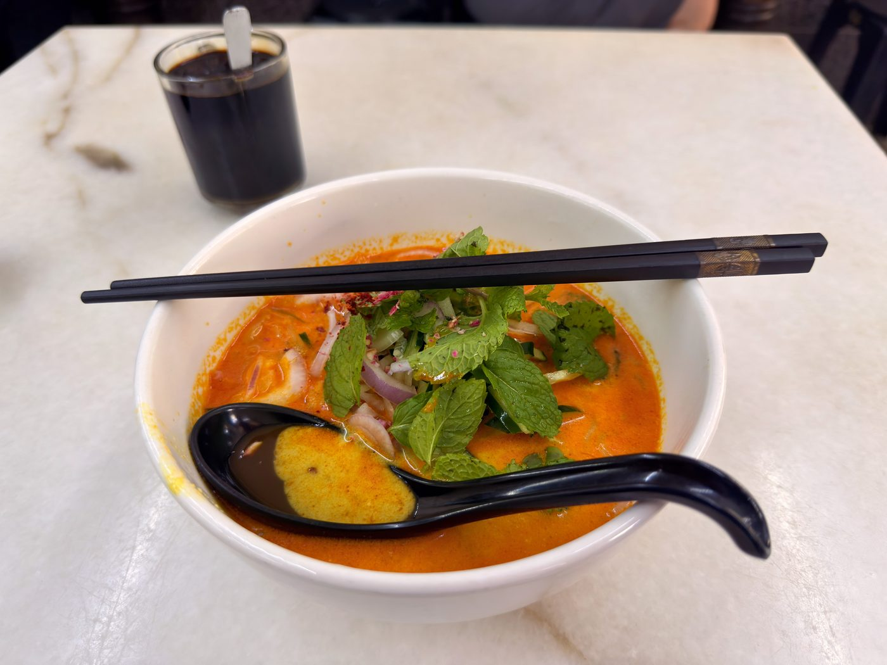

Field guide

Field note · Pulau Tikus · 7 Aug 2026
Granny Q Lemak Laksa at Sin Yong Wah Coffee Shop
Friday breakfast in Pulau Tikus — a lighter, herbal coconut laksa with sweet flashes of pineapple.
I love laksa, but I have not considered it a breakfast dish. So I always pass by this hawker across the street while doing my morning mee-search. Today though, I go ahead and order Granny Q’s Lemak Laksa — and wow, what a perfect breakfast dish! While waiting for my soup, I consult with my AI research assistant, C-Mee-PO, to find out more about this very different, lighter version of a laksa soup.
C-Mee-PO briefs the bowl
C-Mee-PO: Good morning Balazs — the sun is out today, but that orange-colored laksa is beaming even brighter.
Granny Q Lemak Laksa (also known as Granny Q’s Siamese / Nonya-Thai Laksa Lemak) is a creamy, aromatic coconut-based laksa from a family-run stall in Pulau Tikus, Penang. It sits in a delicious middle ground between classic Penang Assam Laksa and richer coconut-milk laksas, built on a recipe the Heng siblings trace back to their Thai grandmother, Goh Lean Kew (“Granny Kew / Granny Q”), from the 1920s.
What it is
A soup-style laksa with a bright orange, gently spicy coconut-cream broth. Defining character: Thai-style wet spice paste (no dry spices) cooked down in coconut cream until fragrant, then “Penang-ised” with local garnishes and a spoon of hae koh (fermented shrimp paste). The result is rich but balanced — creamy without being heavy, aromatic rather than aggressively sour or fishy.
Typical ingredients & toppings
- Noodles — thick translucent rice noodles (beehoon-style)
- Broth base — coconut cream + wet rempah of shallots, chillies, galangal, lemongrass, fresh turmeric root and kaffir lime leaves
- Protein — boneless tilapia (poached or sometimes fried/tempura-style) and prawns
- Garnishes — pineapple slivers, raw onion, cucumber, fresh mint, torch ginger flower (bunga kantan), and a sprinkle of chilli flakes/powder
- Signature finish — a spoonful of hae koh stirred in for depth and that unmistakable Penang umami punch
- Common upgrade — extra fish
Penang style vs elsewhere
Most of Malaysia and Singapore know “laksa lemak” as a thicker, curry-like coconut laksa. Granny Q’s version keeps the coconut cream but stays lighter and more herbal, closer to Thai khanom jeen nam ya in technique, then adds the classic Penang assam-laksa toppings (pineapple, mint, bunga kantan, hae koh). It feels like a true hybrid rather than a straight copy of either style.
C-Mee-PO: How did you like the dish?
I love it! No seafood cockles in this one — it feels so refreshing. Amazing aromas, a savoury-umami coconut milk and curry taste profile, and the delightful surprise of a sweet bite every now and then with the pineapple slivers. I love laksa, but now I love breakfast laksa as well, and I will come back to this hawker frequently, I am sure. What an unexpected delight for my Friday morning!
C-Mee-PO: Balazs, that sounds delightful — do note the orange spots on your shirt front though.
Oh, I see — well, the soft rice noodles were quite slippery; I did have a challenge delivering them straight to the mouth! I’ll continue to work on my technique.
Photos
